Anypoint Flex Gateway is an ultrafast API gateway designed to manage and secure APIs running anywhere. You can implement custom policies via WebAssembly (WASM) extensions that run on Envoy as custom filters. This codelab will show you how to publish the custom policies that you build into Anypoint Exchange. An example custom policy is provided.
How to publish a Flex Gateway custom policy to Anypoint Exchange
If you already have a custom policy built, skip to the next step. Otherwise, download the custom policy from Github and unzip the file.
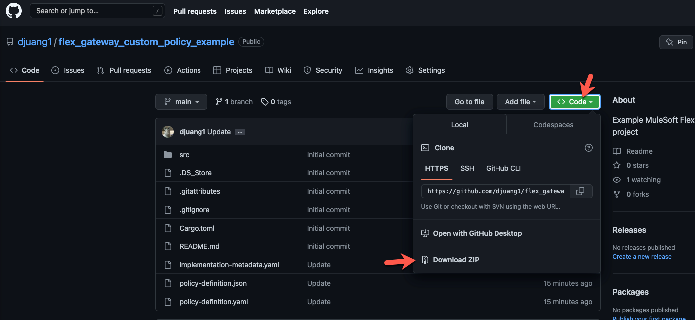
Switch to a terminal window and navigate to the folder.
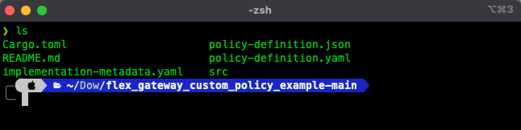
Add wasm32 as a compilation target by running the following command.
rustup target add wasm32-unknown-unknownCompile the custom policy with this command:
cargo build --target wasm32-unknown-unknown --release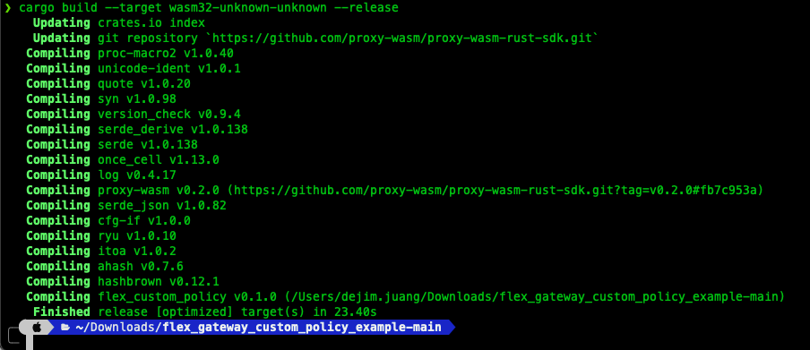
Install wasm-gc if you don't already have it installed. wasm-gc removes unneeded exports, imports, and functions to reduce the size of the final binary file.
cargo install wasm-gcRun the optimization by executing the following command. This is the file that you need to publish to Exchange.
wasm-gc target/wasm32-unknown-unknown/release/flex_custom_policy.wasm -o target/flex_custom_policy-final.wasmMove on to the next step to add the policy to Exchange.
Navigate to Anypoint Exchange and click on Publish new asset
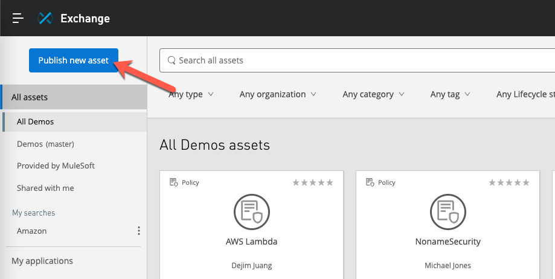
Give your new asset a Name and then select Policy from the Asset types dropdown. Additional fields will be displayed once you select Policy.
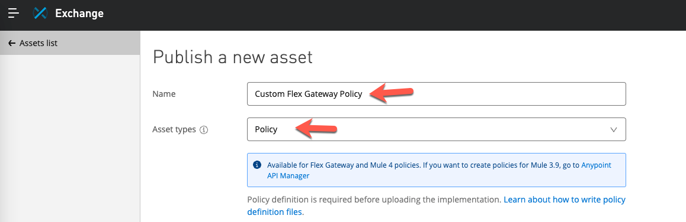
In the custom policy example project, you'll find the files needed for the JSON Schema file and Metadata file fields.
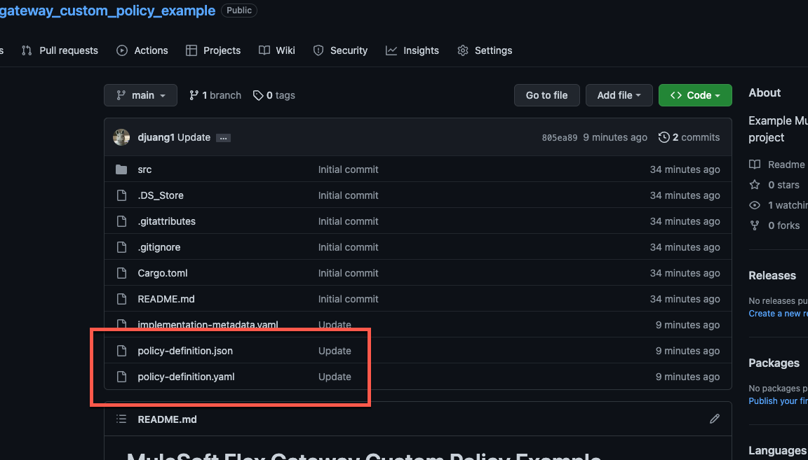
Click on Publish
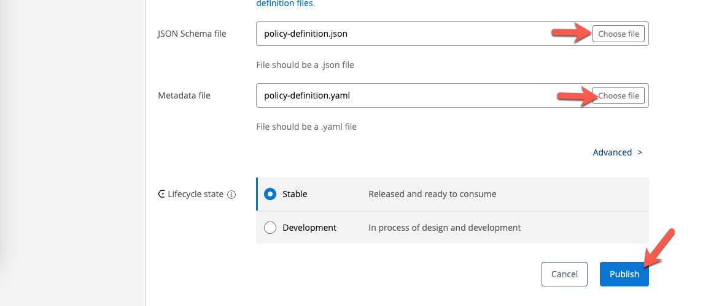
Once the asset has been added to Exchange, you'll need to add the implementation to the asset. The implementation is either a *.jar file for a Mule 4 policy or a *.wasm file for a Flex Gateway policy.
Click on Implementations on the left-hand navigation and then click on Add implementation
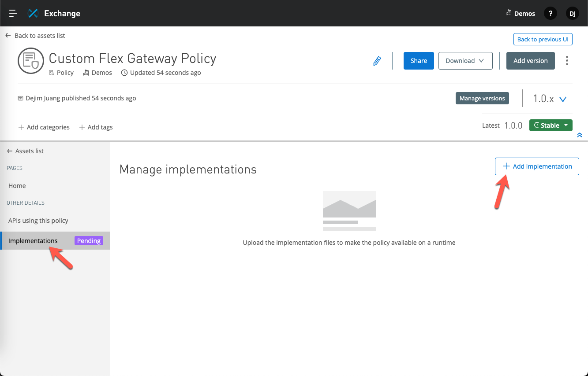
Give the implementation a Name and then click on Choose file for the Binary file field. This is the *.wasm file that we built in the first step. For the Metadata file field, select the implementation-metadata.yaml file from the Github project.
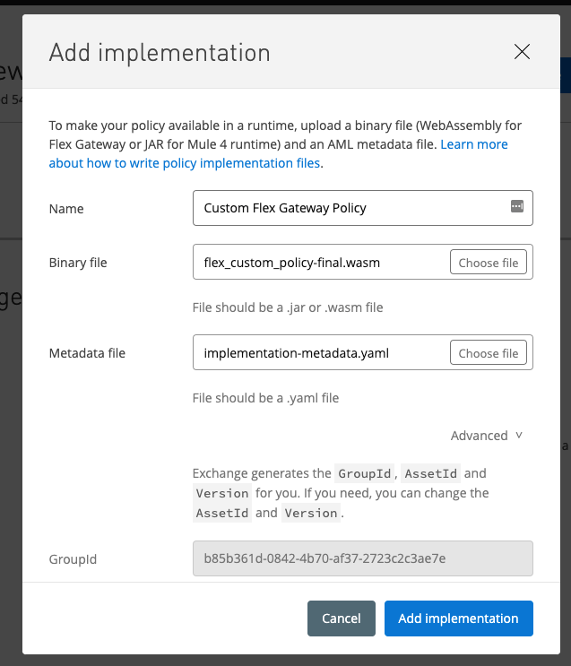
Scroll down and make sure the AssetId field isn't throwing an error because of an existing asset. If so, change the value and then click on Add implementation.
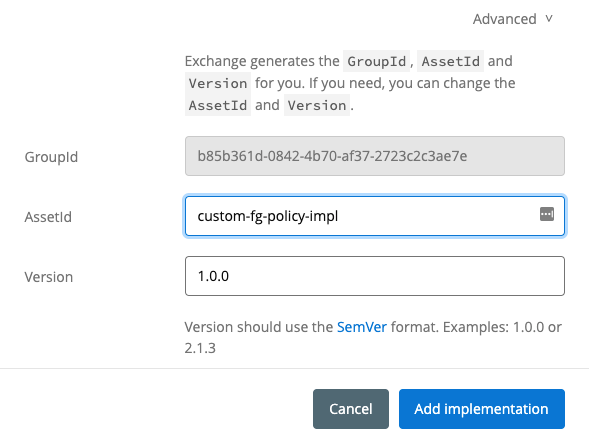
If the asset and implementation were added successfully, you should see the following screen in Exchange.
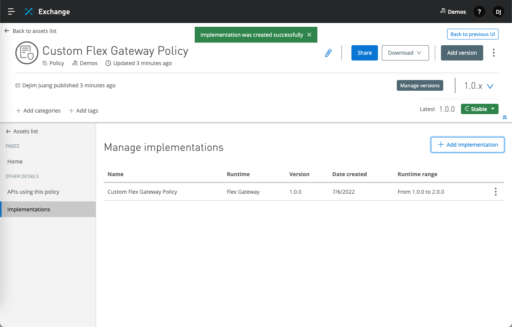
Move on to the next step to add the custom policy to an API that you are managing in API Manager.
Switch to API Manager and open an API that you'd like to apply the custom policy against. Click on Policies on the left-hand navigation bar.
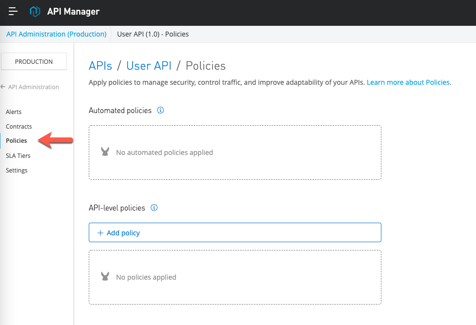
Select the Custom Flex Gateway Policy that we just added and click on Next
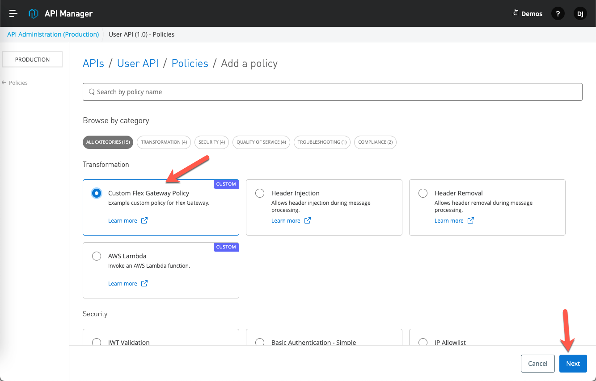
Fill in the Property and Secure Property with any values. You can see the Secure Property field is masked based on the configuration in the policy-definition.json file.
Click on Apply
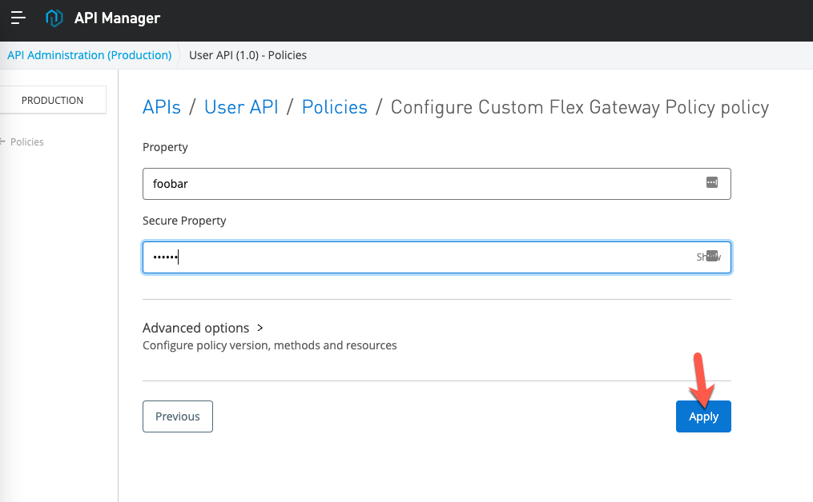
If you have a window with the Flex Gateway logs, you'll see the policy applied to the API.
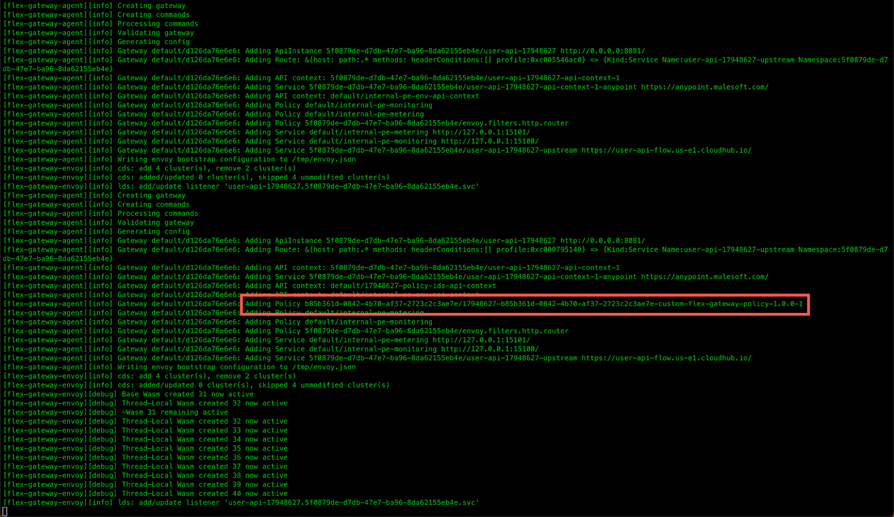
Switch to Postman and navigate to the API endpoint being proxied by the Flex Gateway and click on Send.
Click on the Headers tab in the response section. You'll see the custom-property and secure-custom-property headers with the values that you plugged in when you configured the policy in API Manager.
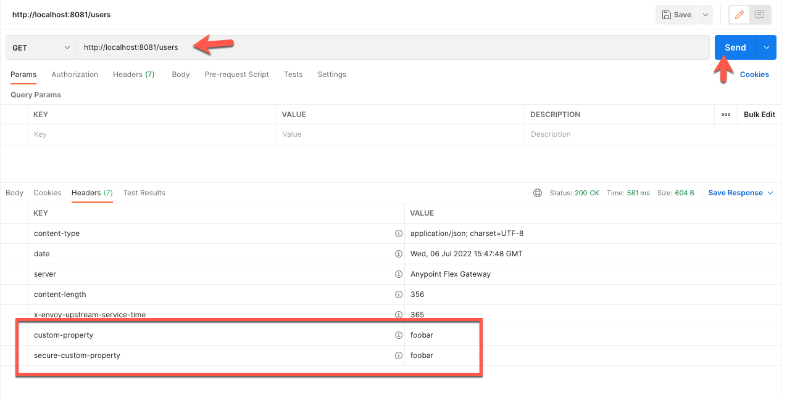
Open another tab in Postman and change the path to /hello and click on Send. In the Rust code, you can see that the policy matches on the path and sends custom headers and a body back in the response.
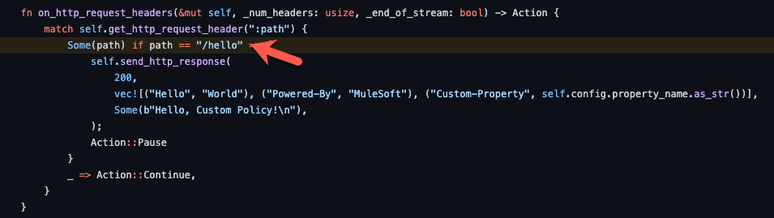
Below is the custom body that is returned by the policy.
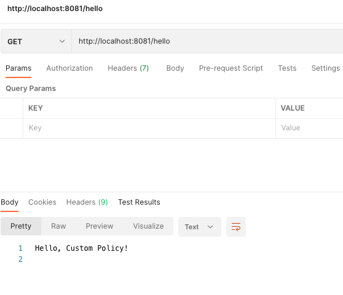
In the Headers tab of the response, you'll see 4 new headers as well as the values that you plugged in when you configured the policy in API Manager.
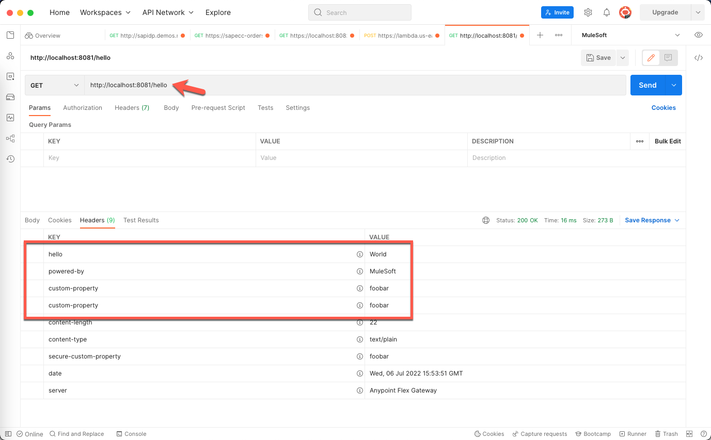
Policies enable you to enforce regulations to help manage security, control traffic, and improve adaptability of your APIs. Once you've written a custom policy for Mule 4 or Flex Gateway, you can easily share them with the rest of the organization by publishing them to Anypoint Exchange.
Additional Documentation